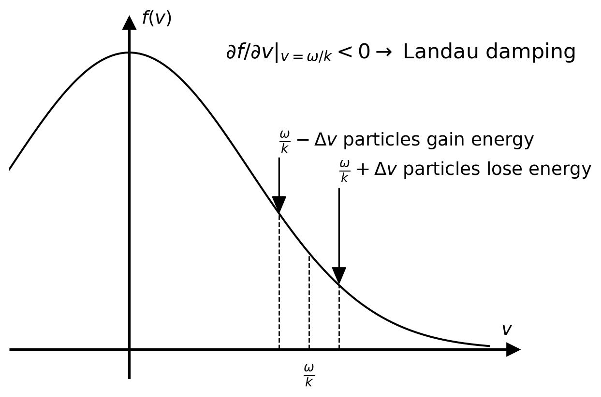
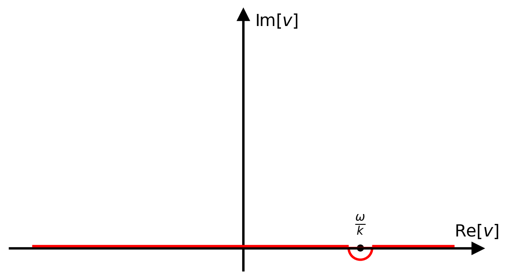
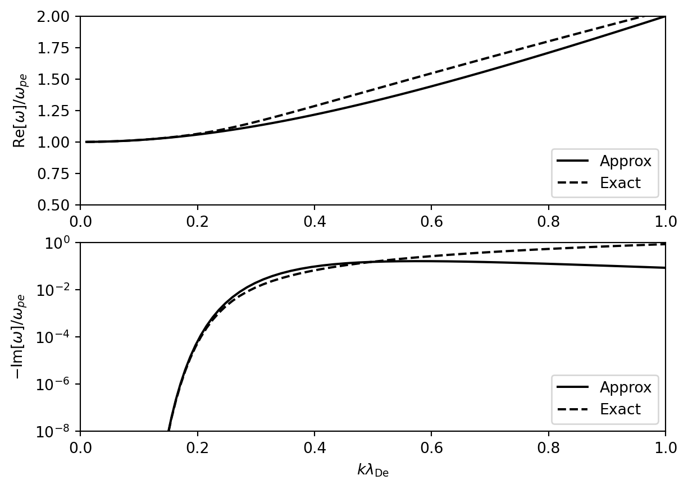

5 熱いプラズマ中の波動
5.1 はじめに
- 冷たいプラズマ中の波動の議論には流体近似を用いてきた．これに対して熱いプラズマ中の波動とはその議論に運動論的効果が無視できないものを指す．
- 運動論的効果を考えると，一部の粒子のみが波動と共鳴する波動粒子相互作用が重要になる場合が出てくる．すなわち速度空間の情報 f(v) を陽に考える必要がある．これはモーメント量だけを用いて分布全体を考えて議論を展開する流体近似とは大きく異なる．
- 熱いプラズマ中の波動の議論は冷たいプラズマに比べてずっと難しいので，ここでは最も簡単な背景磁場がゼロで，かつ静電近似（磁場揺らぎなし）の場合のみを扱う．
5.2 波動粒子相互作用
線形分散関係
以下の1次元Vlasov-Poisson方程式系を基礎方程式として用いる． \begin{aligned} & \frac{\partial f_s}{\partial t} + v \frac{\partial f_s}{\partial x} + \frac{q_s}{m_s} E \frac{\partial f_s}{\partial v} = 0, \\ & \frac{\partial E}{\partial x} = \frac{1}{\epsilon_0} \sum_{s} q_s \int f_s(v) dv. \end{aligned}
0次の分布関数 f_{s,0} の速度空間微分は一般には有限である(\partial/\partial v \neq 0)ことに注意して線形化すると \begin{aligned} - i (\omega - k v) \tilde{f}_s &= - \frac{q_s}{m_s} \tilde{E} \frac{\partial f_{s,0}}{\partial v}, \\ i k \tilde{E} &= \frac{1}{\epsilon_0} \sum_{s} q_s \int \tilde{f}_s dv. \end{aligned}
分散関係は \epsilon = 1 - \sum_{s} \left( \frac{\omega_{ps}}{k} \right)^2 \int_{-\infty}^{+\infty} \frac{F'_{s} (v)}{v - \omega/k} dv = 0 \qquad(5.1) または部分積分して \epsilon = 1 - \sum_{s} \left( \frac{\omega_{ps}}{k} \right)^2 \int_{-\infty}^{+\infty} \frac{F_{s} (v)}{\left(v - \omega/k\right)^2} dv = 0 \qquad(5.2) により得られる．ただし f_{s,0}(v) = n_{0,s} F_{s}(v) により F_{s}(v) を定義した．
Landau共鳴
- 被積分関数に 1/(v - \omega/k) の項があるため， v \approx \omega/k の寄与が大きくなる．これは波動と粒子の共鳴を意味する．これ はLandau共鳴と呼ばれ，その共鳴条件（Landau共鳴条件）は一般に \omega = k v と書かれる．
- 共鳴粒子は波動の特定の位相を長時間感じるため，波動と粒子の間で効率的なエネルギーの輸送が起こる．
流体近似との関係
\omega / k \gg v_{\rm th} のとき，波動と共鳴できる粒子数はほぼゼロである． したがって，このときの分散関係は流体近似の結果と一致するはずである．これを確かめよう．
Langmuir波
\omega / k \gg v_{\rm th,e} \gg v_{\rm th,i} のとき，F_s(v) がMaxwell分布で与えられると仮定すると \begin{aligned} \int \frac{F_s (v)}{(v - \omega/k)^2} dv &\approx \int F_s (v) \left( \frac{k}{\omega} \right)^2 \left[ 1 + 2 \left( \frac{k v}{\omega} \right) + 3 \left( \frac{k v}{\omega} \right)^2 + \cdots \right] dv \\ &= \left[ \left( \frac{k}{\omega} \right)^2 + 0 + 3 v_{\rm th,s}^2 \left( \frac{k}{\omega} \right)^4 + \cdots \right] \end{aligned} \qquad(5.3)
したがって分散関係は 1 - \sum_{s} \left( \frac{\omega_{ps}}{\omega} \right)^2 \left[ 1 + 3 \left( \frac{k v_{\rm th,s}}{\omega} \right)^2 \right] \approx 0. \qquad(5.4) となる．\omega \sim \omega_{pe} として近似解を求めると \omega^2 \approx \omega_{pe}^2 \left( 1 + 3 k^2 \lambda_{De}^2 \right). \qquad(5.5) これは流体近似のLangmuir波で \gamma = 3 (自由度 = 1)としたものに等しい．
イオン音波
v_{\rm th,i} \ll \omega/k \ll v_{\rm th,e} のとき，電子については \int \frac{F_s (v)}{(v - \omega/k)^2} dv \approx \int \frac{F_s (v)}{v^2} dv = -\frac{1}{v_{\rm th,e}^2} \qquad(5.6) なる近似を採用すると，分散関係は 1 + \left( \frac{\omega_{pe}}{k v_{\rm th,e}} \right)^2 - \left( \frac{\omega_{pi}}{\omega} \right)^2 \left[ 1 + 3 \left( \frac{k v_{\rm th,i}}{\omega} \right)^2 \right] \approx 0. \qquad(5.7) となる． T_e/T_i \gg 1 (電子温度がイオン温度よりも十分大きい)という条件のもとで 長波長近似 (k \rightarrow 0) の解を求めると \omega^2 = k^2 V_{\rm s}^2, \quad \quad V_{\rm s}^2 \equiv \frac{k_B (T_e + 3 T_i)}{m_i} \qquad(5.8) となる．これは流体近似のイオン音波の解で電子を \gamma = 1 (自由度 = 無限大)，イオンを \gamma = 3 (自由度 = 1) としたものに等しい．
演習問題 5.2
- 式 5.3 を示せ．
- 式 5.4 において，近似解 \omega \sim \omega_{pe} を代入し，逐次近似によって 式 5.5 が得られることを示せ．
- 式 5.6 を示せ．
- 式 5.7 において，k^2 v_{\rm th,i}^2 \ll \omega^2 \ll \wpi^2，k^2 v_{\rm th,e}^2 \ll \wpe^2 と仮定することで，分散関係 \omega^2 \approx k^2 v_{\rm th,e}^2 が得られることを示せ．
- 式 5.7 に前問で得た近似解 \omega^2 \approx k^2 v_{\rm th,e}^2 を代入し，逐次近似によって 式 5.8 が得られることを示せ．（この近似が整合的であるためには T_e/T_i \gg 1 の条件が必要である．）
Landau減衰
波動粒子相互作用によって波動と粒子の間でエネルギー交換が起こる．Landau共鳴によって波動から粒子にエネルギーが変換され，波動が減衰するとき，これをLandau減衰と呼ぶ．逆に，粒子から波動にエネルギーが変換され，波動が成長するとき，これを逆Landau減衰と呼ぶ．
直感的な議論
粒子の感じる電場は次のように書ける． E(x, t) = E_0 \cos (k x - \omega t) = E_0 \cos\left[k \left(x - \frac{\omega}{k} t \right) \right] これからLandau共鳴条件 \omega = kv を満たすとき，粒子は波の同じ位相を長時間感じ続けるので，効率の良いエネルギー輸送が起こり得ることが分かる．
波動と粒子分布全体のエネルギーのやり取りを考えるには，単一粒子のエネルギー増減でなく，共鳴速度近傍の粒子の寄与の積分を考える必要がある．共鳴速度から少しずれた速度 v = \omega/k + \Delta v を持つ粒子が波の同じ位相を感じる時間は以下で与えられる． \Delta t \sim \frac{\pi}{k \Delta v}
- v = \omega/k + \Delta v (共鳴速度よりも少し速い粒子)
- 加速 される位相にいる粒子が同じ位相を感じ続ける時間 → \Delta t よりも 短い
- 減速 される位相にいる粒子が同じ位相を感じ続ける時間 → \Delta t よりも 長い
→ 正味では減速される
- v = \omega/k - \Delta v (共鳴速度よりも少し遅い粒子)
- 加速 される位相にいる粒子が同じ位相を感じ続ける時間 → \Delta t よりも 長い
- 減速 される位相にいる粒子が同じ位相を感じ続ける時間 → \Delta t よりも 短い
→ 正味では加速される
共鳴速度 v = \omega/k における速度分布関数の傾き \partial f_0/\partial v \lvert_{v=\omega/k} が重要となる（図 5.1 参照）．
\partial f_0/\partial v \lvert_{v=\omega/k} < 0
加速される粒子の方が減速される粒子よりも多い → 粒子のエネルギー増 = 波のエネルギー減
すなわち， 波は減衰 する．→ Landau減衰
通常の速度分布関数(例: Maxwell分布)のもとでは，衝突(=散逸)が無いにも関わらず，波と粒子の共鳴（波動粒子相互作用）によってエネルギー輸送が起こり，波の減衰が起こる．これは無衝突系に特有の現象．\partial f_0/\partial v \lvert_{v=\omega/k} > 0
減速される粒子の方が加速される粒子よりも多い → 粒子のエネルギー減 = 波のエネルギー増
すなわち， 波は成長 する．→ 逆Landau減衰
何らかの原因で速度分布関数に正の勾配ができると，系が不安定となり波動が成長する．
簡易的な取り扱い
厳密な取り扱いは少し数学的に難しい議論を必要とするので，ここでは簡易的な取り扱いによってLandau減衰を議論する． ここでは簡単のため，以下を仮定しよう．
- Langmuir波について考え，電子の寄与のみを考慮する．
- 0次近似として流体近似を採用し，共鳴による効果は摂動論によって扱う．
有限の減衰率（成長率）を持つ解を考えたいので，\omega = \omega_r + i \gamma の形を考えよう． ただし，共鳴効果は摂動として扱うので |\omega_r| \gg |\gamma| としよう． このとき，速度空間の積分路上には特異点（極）が存在するので，これを避けなければならない． ここでは速度空間の積分も複素平面に拡張して（解析接続して），図 5.2 のような 特異点を避けた積分経路を考えよう．このとき留数定理を用いると \begin{aligned} \epsilon &= 1 - \left( \frac{\omega_{pe}}{k} \right)^2 \int_{-\infty}^{+\infty} \frac{F_e' (v)}{v - \omega/k} dv \\ &\approx \underbrace{ 1 - \left( \frac{\omega_{pe}}{k} \right)^2 P \int_{-\infty}^{+\infty} \frac{F_e' (v)}{v - \omega/k} dv \vphantom{\bigg \vert_{v = \omega/k}} }_{\epsilon_r} \,\, \underbrace{ - i \pi \left( \frac{\omega_{pe}}{k} \right)^2 \frac{\partial F_e}{\partial v} \bigg \vert_{v = \omega/k} }_{\epsilon_i} \\ &= \epsilon_r + i \epsilon_i \end{aligned} と書ける．ここで \epsilon_r に現れる P \int dv は主値積分（特異点以外からの寄与）である．

実部 \epsilon_r = 0 は流体近似の分散関係を与えることに注意して，共鳴によって現れる虚部 \epsilon_i が実部に比べて十分に小さい場合 (|\epsilon_r| \gg |\epsilon_i|) を考えると \gamma \approx \pi \left( \frac{\omega_{pe}}{k} \right)^2 \frac{\dfrac{\partial F_e}{\partial v} \bigg \vert_{v=\omega_r/k}}{\dfrac{\partial \epsilon_r}{\partial \omega} \bigg \vert_{\omega = \omega_r}} \qquad(5.9) が得られる．これより，確かに速度分布関数の傾きで \gamma の正負が決まることが分かる． 実部 \epsilon_r から得られるLangmuir波の分散関係 \epsilon_r \approx 1 - \left( \frac{\omega_{pe}}{\omega} \right)^2 \left[ 1 + 3 \left( k \lambda_{\rm De} \right)^2 \right] を使って具体的に評価すると \gamma \approx - \sqrt{\frac{\pi}{8}} \frac{\omega_{pe}}{(k \lambda_{De})^3} \exp \left[ - \frac{1}{2 (k \lambda_{De})^2} - \frac{3}{2} \right] \qquad(5.10) となる．これより k \lambda_{De} \ll 1 (長波長)ではLandau減衰の効果は無視できることが分かる．一方で k \lambda_{De} \gtrsim 1 においてはLandau減衰の効果が無視できなくなる．これは\omega/k と v_{\rm th,e} との大小関係によって直感的に理解できる．参考までにこの近似解と数値的に求めた厳密解を 図 5.3 に示す（ここでは厳密な扱いには触れていないことに注意）．

厳密に積分できる例
一般には分布関数に表れる速度空間での積分は解析的に実行できないので，近似的な（もしくは数値的な）扱いが必要になる．ここでは解析的に積分できる例として，速度分布関数がCauchy分布 F (v) = \frac{C}{\pi} \frac{1}{v^2 + C^2} で与えられる場合を考えよう．ここで C は分布の幅（Maxwell分布における熱速度に相当）を表す．
電子の寄与のみを考えると \begin{aligned} \epsilon &= 1 - \left( \frac{\omega_{pe}}{k} \right)^2 \int_{-\infty}^{+\infty} \frac{F_e (v)}{(v - \omega/k)^2} dv \\ &= 1 - \left( \frac{\omega_{pe}}{k} \right)^2 \frac{C}{\pi} \int_{-\infty}^{+\infty} \frac{dv}{(v + i C)(v - i C)(v - \omega/k)^2} \end{aligned} \qquad(5.11) である．ここで， 図 5.2 と同様に特異点 v = \omega/k の下を 通るような積分路を考えて厳密に積分を実行すると 1 - \frac{\omega_{pe}^2}{(\omega + i k C)^2} = 0 すなわち \omega = \pm \omega_{pe} - i k C が得られる．これは定性的にはMaxwell分布の場合と同様に，長波長では減衰率が小さく， 短波長では減衰率が大きくなる．
演習問題 5.4 特異点 v = \omega/k の下を通る積分路を考えて 式 5.11 の積分を実行せよ． また，このとき {\rm Im} [\omega/k] の正負によって結果が変わらないことを確認せよ．
5.3 電子ビーム不安定性
熱的電子（コア成分）に加えて，有限のビーム成分を持つ電子（ビーム成分）が共存する系： - コア成分：密度 n_e, 速度 V_e = 0, 熱速度 v_{\rm th,e}, 規格化された分布関数 F_e (v) - ビーム成分：密度 n_b, 速度 V_b \neq 0, 熱速度 v_{\rm th,b}, 規格化された分布関数 F_b (v)
ただし n_b \ll n_e とする．
このとき分散関係は両成分の線形和で以下のように表される． \begin{aligned} \epsilon &= 1 - \underbrace{ \left( \frac{\omega_{pe}}{k} \right)^2 \int_{-\infty}^{+\infty} \frac{F_e (v)}{(v - \omega/k)^2} dv }_{{\text コア成分}} - \underbrace{ \left( \frac{\omega_{pb}}{k} \right)^2 \int_{-\infty}^{+\infty} \frac{F_b (v)}{(v - \omega/k)^2} dv }_{{\text ビーム成分}} \end{aligned}
流体的不安定性(冷たいビーム不安定性)
F_e (v) = \delta (v) および F_b (v) = \delta (v - V_b) と近似すると \epsilon \approx 1 - \left( \frac{\omega_{pe}}{\omega} \right)^2 - \left( \frac{\omega_{pb}}{\omega - k V_b} \right)^2 = 0.
- ビーム密度が十分小さいため， \omega - k V_b \approx 0 のとき以外はビーム成分の影響は無視できる． → \omega^2 \approx \omega_{pe}^2 (Langmuir波)
- Langmuir波とビーム成分のLandau共鳴条件が交差する点でビーム成分の影響が大きく表れる． → (\omega, k) \approx (\omega_{pe}, \omega_{pe} / V_b) で交差
\omega_0 \equiv \omega_{pe} = k V_b として，\omega = \omega_0 + \delta \omega (\delta \omega \ll \omega_0) を代入して以下の3次方程式を得る． \left( \frac{\delta \omega}{\omega_{pe}} \right)^3 \approx \frac{1}{2} \left( \frac{\omega_{pb}}{\omega_{pe}} \right)^2 = \frac{1}{2} \left( \frac{n_b}{n_e} \right)
したがって不安定解は \dfrac{\delta \omega}{\omega_{pe}} \approx \dfrac{1 + \sqrt{3} i}{2} \left( \dfrac{n_b}{2 n_e} \right)^{1/3} となる．\gamma \propto (n_b/n_e)^{1/3} であることに注意．
運動論的不安定性(Bump on tail不安定性)
- v_{\rm th,e} \ll V_b のときを考えて，コア成分の運動論効果は無視する．
- 周波数の実部はコア成分のみで，虚部はビーム成分のみで決まると仮定する．
\begin{aligned} \epsilon &\approx 1 - \left( \frac{\omega_{pe}}{\omega} \right)^2 - \left( \frac{\omega_{pb}}{k} \right)^2 \int_{-\infty}^{+\infty} \frac{F_b (v)}{(v - \omega/k)^2} dv \\ &\approx 1 - \left( \frac{\omega_{pe}}{\omega} \right)^2 - \left( \frac{\omega_{pb}}{k} \right)^2 \left[ %\cancel{ P \int_{-\infty}^{+\infty} \frac{F_b(v)}{(v - \omega/k)^2} dv %} + i \pi \frac{\partial F_b}{\partial v} \Bigg \vert_{v=\omega_r/k} \right] \\ &\approx 1 - \left( \frac{\omega_{pe}}{\omega} \right)^2 - i \pi \left( \frac{\omega_{pb}}{k} \right)^2 \frac{\partial F_b}{\partial v} \Bigg \vert_{v=\omega_r/k} \\ &= \epsilon_r + i \epsilon_i \end{aligned}
Landau減衰の議論と同様に周波数の虚部を求めると \frac{\gamma}{\omega_{pe}} \approx \frac{\pi}{2} \left( \frac{\omega_{pb}}{\omega_{pe}} \right)^2 \left( \frac{\omega}{\omega_{pe}} \right) \left( \frac{\omega}{k} \right)^2 \frac{\partial F_b}{\partial v} \Bigg \vert_{v=\omega_r/k}
ビーム成分としてMaxwell分布 F_b (v) = \frac{1}{\sqrt{2\pi v_{\rm th,b}^2}} \exp \left[ - \frac{(v - V_b)^2}{2 v_{\rm th,b}^2} \right] と \omega \approx \omega_{pe} \approx k V_b を使うと，成長率の最大値として \frac{\gamma_{\rm max}}{\omega_{pe}} \approx \frac{1}{2} \sqrt{\frac{\pi}{2e}} \left( \frac{n_b}{n_e} \right) \left( \frac{V_b}{v_{\rm th,b}} \right)^2 が得られる．流体的不安定性の場合と異なり，ビーム密度に対する依存性は \gamma \propto (n_b/n_e) となる． (V_b/v_{\rm th,b} が小さいときには不安定性には運動論効果が重要な役割を果たすが，この値が十分に大きくなると運動論的不安定性から流体不安定性に移行する．)